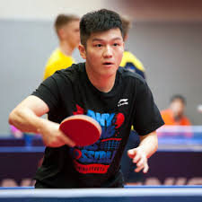

Фань Чженьдун
 У липні 2013 року вперше увійшов в десятку кращих гравців світу згідно з рейтингом ITTF [2]. У віці 17 років і 103 дні став наймолодшим чемпіоном світу в історії настільного тенісу [3], завоювавши в складі збірної Китаю золоту медаль на командному чемпіонаті світу 2014 року. На змаганнях з настільного тенісу на Олімпійських іграх 2016 року в Ріо-де-Жанейро кожна країна могла бути представлена трьома спортсменами, але не більше двох в одиночних розрядах [4]. Фань Чженьдуна став одним з «постраждалих» через це обмеження. Незважаючи на те, що з листопада 2015 року та на момент проведення чоловічого одиночного турніру ОІ 2016 спортсмен займав 2-е місце в рейтингу ІТТФ [5], він не був допущений до участі в чоловічому одиночному турнірі. Фань Чженьдуна здобував перемогу в одиночному розряді на 13 етапах ITTF World Tour. У 2016 році вперше став володарем Кубка Світу в одиночному розряді. У квітні 2017 року Фань Чженьдуна виграв Чемпіонат Азії в одиночному розряді [6]. У грудні 2017 року Фань Чженьдуна став переможцем в одиночному розряді ITTF World Tour Grand Finals в Астані [7]. 2018 рік Фань Чженьдуна почав з перемог в етапах світового туру Hungarian Open і Qatar Open і в квітні вперше в своїй кар'єрі зайняв першу позицію світового рейтингу [8]. У травні 2018 року Фань Чженьдуна в четвертий раз став чемпіоном світу, завоювавши в складі китайської команди золоті медалі на чемпіонаті світу в Швеції. У жовтні 2018 року Фань Чженьдуна вдруге став володарем Кубка світу в одиночному розряді [9]. У грудні 2019 року Фань Чженьдуна став переможцем в одиночному розряді ITTF World Tour Grand Finals в Чженчжоу.